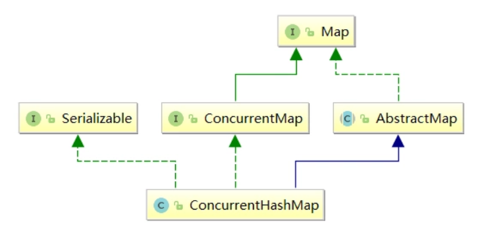
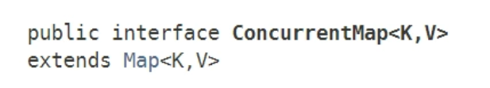
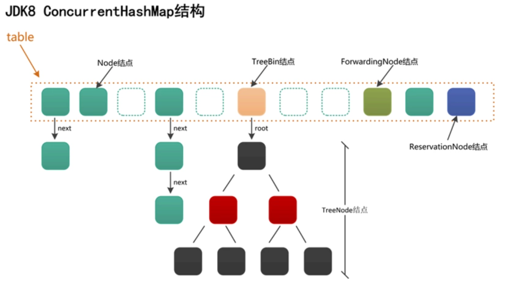
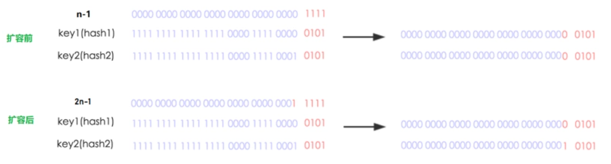

ConcurrentHashMap是在JDK1.5时，J.U.C引入的一个同步集合工具类，顾名思义，这是一个线程安全的HashMap。不同版本的ConcurrentHashMap，内部实现机制千差万别，本节所有的讨论基于JDK1.8。
一、类简介
ConcurrentHashMap的类继承关系并不复杂：

可以看到ConcurrentHashMap继承了AbstractMap，这是一个java.util包下的抽象类，提供Map接口的骨干实现，以最大限度地减少实现Map这类数据结构时所需的工作量，一般来讲，如果需要重复造轮子——自己来实现一个Map，那一般就是继承AbstractMap。
另外，ConcurrentHashMap实现了ConcurrentMap这个接口，ConcurrentMap是在JDK1.5时随着J.U.C包引入的，这个接口其实就是提供了一些针对Map的原子操作：

ConcurrentMap接口提供的功能：
| 方法签名 | 功能 |
|---|---|
| getOrDefault(Object key, V defaultValue) | 返回指定key对应的值；如果Map不存在该key，则返回defaultValue |
| forEach(BiConsumer action) | 遍历Map的所有Entry，并对其进行指定的aciton操作 |
| putIfAbsent(K key, V value) | 如果Map不存在指定的key，则插入<K,V>；否则，直接返回该key对应的值 |
| remove(Object key, Object value) | 删除与<key,value>完全匹配的Entry，并返回true；否则，返回false |
| replace(K key, V oldValue, V newValue) | 如果存在key，且值和oldValue一致，则更新为newValue，并返回true；否则，返回false |
| replace(K key, V value) | 如果存在key，则更新为value，返回旧value；否则，返回null |
| replaceAll(BiFunction function) | 遍历Map的所有Entry，并对其进行指定的funtion操作 |
| computeIfAbsent(K key, Function mappingFunction) | 如果Map不存在指定的key，则通过mappingFunction计算value并插入 |
| computeIfPresent(K key, BiFunction remappingFunction) | 如果Map存在指定的key，则通过mappingFunction计算value并替换旧值 |
| compute(K key, BiFunction remappingFunction) | 根据指定的key，查找value；然后根据得到的value和remappingFunction重新计算新值，并替换旧值 |
| merge(K key, V value, BiFunction remappingFunction) | 如果key不存在，则插入value；否则，根据key对应的值和remappingFunction计算新值，并替换旧值 |
二、基本结构
我们先来看下ConcurrentHashMap对象的内部结构究竟什么样的：

基本结构
ConcurrentHashMap内部维护了一个Node类型的数组，也就是table：
transient volatile Node<K, V>[] table;数组的每一个位置table[i]代表了一个桶，当插入键值对时，会根据键的hash值映射到不同的桶位置，table一共可以包含4种不同类型的桶：Node、TreeBin、ForwardingNode、ReservationNode。上图中，不同的桶用不同颜色表示。可以看到，有的桶链接着链表，有的桶链接着树，这也是JDK1.8中ConcurrentHashMap的特殊之处，后面会详细讲到。
需要注意的是：TreeBin所链接的是一颗红黑树，红黑树的结点用TreeNode表示，所以ConcurrentHashMap中实际上一共有五种不同类型的Node结点。
之所以用TreeBin而不是直接用TreeNode，是因为红黑树的操作比较复杂，包括构建、左旋、右旋、删除，平衡等操作，用一个代理结点TreeBin来包含这些复杂操作，其实是一种“职责分离”的思想。另外TreeBin中也包含了一些加/解锁的操作。
在JDK1.8之前，ConcurrentHashMap采用了分段锁的设计思路，以减少热点域的冲突。JDK1.8时不再延续，转而直接对每个桶加锁，并用“红黑树”链接冲突结点。关于红黑树和一般HashMap的实现思路，读者可以参考《Algorithms 4th》
结点定义
上一节提到，ConcurrentHashMap一共包含5种结点，我们来看下各个结点的定义和作用。
Node结点
Node结点的定义非常简单，也是其它四种类型结点的父类。
默认链接到
table[i]——桶上的结点就是Node结点。
当出现hash冲突时，Node结点会首先以链表的形式链接到table上，当结点数量超过一定数目时，链表会转化为红黑树。因为链表查找的平均时间复杂度为O(n)，而红黑树是一种平衡二叉树，其平均时间复杂度为O(logn)。
/**
* 普通的Entry结点, 以链表形式保存时才会使用, 存储实际的数据.
*/
static class Node<K, V> implements Map.Entry<K, V> {
final int hash;
final K key;
volatile V val;
volatile Node<K, V> next; // 链表指针
Node(int hash, K key, V val, Node<K, V> next) {
this.hash = hash;
this.key = key;
this.val = val;
this.next = next;
}
public final K getKey() {
return key;
}
public final V getValue() {
return val;
}
public final int hashCode() {
return key.hashCode() ^ val.hashCode();
}
public final String toString() {
return key + "=" + val;
}
public final V setValue(V value) {
throw new UnsupportedOperationException();
}
public final boolean equals(Object o) {
Object k, v, u;
Map.Entry<?, ?> e;
return ((o instanceof Map.Entry) &&
(k = (e = (Map.Entry<?, ?>) o).getKey()) != null &&
(v = e.getValue()) != null &&
(k == key || k.equals(key)) &&
(v == (u = val) || v.equals(u)));
}
/**
* 链表查找.
*/
Node<K, V> find(int h, Object k) {
Node<K, V> e = this;
if (k != null) {
do {
K ek;
if (e.hash == h &&
((ek = e.key) == k || (ek != null && k.equals(ek))))
return e;
} while ((e = e.next) != null);
}
return null;
}
}TreeNode结点
TreeNode就是红黑树的结点，TreeNode不会直接链接到table[i]——桶上面，而是由TreeBin链接，TreeBin会指向红黑树的根结点。
/**
* 红黑树结点, 存储实际的数据.
*/
static final class TreeNode<K, V> extends Node<K, V> {
boolean red;
TreeNode<K, V> parent;
TreeNode<K, V> left;
TreeNode<K, V> right;
/**
* prev指针是为了方便删除.
* 删除链表的非头结点时，需要知道它的前驱结点才能删除，所以直接提供一个prev指针
*/
TreeNode<K, V> prev;
TreeNode(int hash, K key, V val, Node<K, V> next,
TreeNode<K, V> parent) {
super(hash, key, val, next);
this.parent = parent;
}
Node<K, V> find(int h, Object k) {
return findTreeNode(h, k, null);
}
/**
* 以当前结点（this）为根结点，开始遍历查找指定key.
*/
final TreeNode<K, V> findTreeNode(int h, Object k, Class<?> kc) {
if (k != null) {
TreeNode<K, V> p = this;
do {
int ph, dir;
K pk;
TreeNode<K, V> q;
TreeNode<K, V> pl = p.left, pr = p.right;
if ((ph = p.hash) > h)
p = pl;
else if (ph < h)
p = pr;
else if ((pk = p.key) == k || (pk != null && k.equals(pk)))
return p;
else if (pl == null)
p = pr;
else if (pr == null)
p = pl;
else if ((kc != null ||
(kc = comparableClassFor(k)) != null) &&
(dir = compareComparables(kc, k, pk)) != 0)
p = (dir < 0) ? pl : pr;
else if ((q = pr.findTreeNode(h, k, kc)) != null)
return q;
else
p = pl;
} while (p != null);
}
return null;
}
}TreeBin结点
TreeBin相当于TreeNode的代理结点。TreeBin会直接链接到table[i]——桶上面，该结点提供了一系列红黑树相关的操作，以及加锁、解锁操作。
/**
* TreeNode的代理结点（相当于封装了TreeNode的容器，提供针对红黑树的转换操作和锁控制）
* hash值固定为-3
*/
static final class TreeBin<K, V> extends Node<K, V> {
TreeNode<K, V> root; // 红黑树结构的根结点
volatile TreeNode<K, V> first; // 链表结构的头结点
volatile Thread waiter; // 最近的一个设置WAITER标识位的线程
volatile int lockState; // 整体的锁状态标识位
static final int WRITER = 1; // 二进制001，红黑树的写锁状态
static final int WAITER = 2; // 二进制010，红黑树的等待获取写锁状态
static final int READER = 4; // 二进制100，红黑树的读锁状态，读可以并发，每多一个读线程，lockState都加上一个READER值
/**
* 在hashCode相等并且不是Comparable类型时，用此方法判断大小.
*/
static int tieBreakOrder(Object a, Object b) {
int d;
if (a == null || b == null ||
(d = a.getClass().getName().
compareTo(b.getClass().getName())) == 0)
d = (System.identityHashCode(a) <= System.identityHashCode(b) ?
-1 : 1);
return d;
}
/**
* 将以b为头结点的链表转换为红黑树.
*/
TreeBin(TreeNode<K, V> b) {
super(TREEBIN, null, null, null);
this.first = b;
TreeNode<K, V> r = null;
for (TreeNode<K, V> x = b, next; x != null; x = next) {
next = (TreeNode<K, V>) x.next;
x.left = x.right = null;
if (r == null) {
x.parent = null;
x.red = false;
r = x;
} else {
K k = x.key;
int h = x.hash;
Class<?> kc = null;
for (TreeNode<K, V> p = r; ; ) {
int dir, ph;
K pk = p.key;
if ((ph = p.hash) > h)
dir = -1;
else if (ph < h)
dir = 1;
else if ((kc == null &&
(kc = comparableClassFor(k)) == null) ||
(dir = compareComparables(kc, k, pk)) == 0)
dir = tieBreakOrder(k, pk);
TreeNode<K, V> xp = p;
if ((p = (dir <= 0) ? p.left : p.right) == null) {
x.parent = xp;
if (dir <= 0)
xp.left = x;
else
xp.right = x;
r = balanceInsertion(r, x);
break;
}
}
}
}
this.root = r;
assert checkInvariants(root);
}
/**
* 对红黑树的根结点加写锁.
*/
private final void lockRoot() {
if (!U.compareAndSwapInt(this, LOCKSTATE, 0, WRITER))
contendedLock();
}
/**
* 释放写锁.
*/
private final void unlockRoot() {
lockState = 0;
}
/**
* Possibly blocks awaiting root lock.
*/
private final void contendedLock() {
boolean waiting = false;
for (int s; ; ) {
if (((s = lockState) & ~WAITER) == 0) {
if (U.compareAndSwapInt(this, LOCKSTATE, s, WRITER)) {
if (waiting)
waiter = null;
return;
}
} else if ((s & WAITER) == 0) {
if (U.compareAndSwapInt(this, LOCKSTATE, s, s | WAITER)) {
waiting = true;
waiter = Thread.currentThread();
}
} else if (waiting)
LockSupport.park(this);
}
}
/**
* 从根结点开始遍历查找，找到“相等”的结点就返回它，没找到就返回null
* 当存在写锁时，以链表方式进行查找
*/
final Node<K, V> find(int h, Object k) {
if (k != null) {
for (Node<K, V> e = first; e != null; ) {
int s;
K ek;
/**
* 两种特殊情况下以链表的方式进行查找:
* 1. 有线程正持有写锁，这样做能够不阻塞读线程
* 2. 有线程等待获取写锁，不再继续加读锁，相当于“写优先”模式
*/
if (((s = lockState) & (WAITER | WRITER)) != 0) {
if (e.hash == h &&
((ek = e.key) == k || (ek != null && k.equals(ek))))
return e;
e = e.next;
} else if (U.compareAndSwapInt(this, LOCKSTATE, s,
s + READER)) {
TreeNode<K, V> r, p;
try {
p = ((r = root) == null ? null :
r.findTreeNode(h, k, null));
} finally {
Thread w;
if (U.getAndAddInt(this, LOCKSTATE, -READER) ==
(READER | WAITER) && (w = waiter) != null)
LockSupport.unpark(w);
}
return p;
}
}
}
return null;
}
/**
* 查找指定key对应的结点,如果未找到，则插入.
*
* @return 插入成功返回null, 否则返回找到的结点
*/
final TreeNode<K, V> putTreeVal(int h, K k, V v) {
Class<?> kc = null;
boolean searched = false;
for (TreeNode<K, V> p = root; ; ) {
int dir, ph;
K pk;
if (p == null) {
first = root = new TreeNode<K, V>(h, k, v, null, null);
break;
} else if ((ph = p.hash) > h)
dir = -1;
else if (ph < h)
dir = 1;
else if ((pk = p.key) == k || (pk != null && k.equals(pk)))
return p;
else if ((kc == null &&
(kc = comparableClassFor(k)) == null) ||
(dir = compareComparables(kc, k, pk)) == 0) {
if (!searched) {
TreeNode<K, V> q, ch;
searched = true;
if (((ch = p.left) != null &&
(q = ch.findTreeNode(h, k, kc)) != null) ||
((ch = p.right) != null &&
(q = ch.findTreeNode(h, k, kc)) != null))
return q;
}
dir = tieBreakOrder(k, pk);
}
TreeNode<K, V> xp = p;
if ((p = (dir <= 0) ? p.left : p.right) == null) {
TreeNode<K, V> x, f = first;
first = x = new TreeNode<K, V>(h, k, v, f, xp);
if (f != null)
f.prev = x;
if (dir <= 0)
xp.left = x;
else
xp.right = x;
if (!xp.red)
x.red = true;
else {
lockRoot();
try {
root = balanceInsertion(root, x);
} finally {
unlockRoot();
}
}
break;
}
}
assert checkInvariants(root);
return null;
}
/**
* 删除红黑树的结点：
* 1. 红黑树规模太小时，返回true，然后进行 树 -> 链表 的转化;
* 2. 红黑树规模足够时，不用变换成链表，但删除结点时需要加写锁.
*/
final boolean removeTreeNode(TreeNode<K, V> p) {
TreeNode<K, V> next = (TreeNode<K, V>) p.next;
TreeNode<K, V> pred = p.prev; // unlink traversal pointers
TreeNode<K, V> r, rl;
if (pred == null)
first = next;
else
pred.next = next;
if (next != null)
next.prev = pred;
if (first == null) {
root = null;
return true;
}
if ((r = root) == null || r.right == null || // too small
(rl = r.left) == null || rl.left == null)
return true;
lockRoot();
try {
TreeNode<K, V> replacement;
TreeNode<K, V> pl = p.left;
TreeNode<K, V> pr = p.right;
if (pl != null && pr != null) {
TreeNode<K, V> s = pr, sl;
while ((sl = s.left) != null) // find successor
s = sl;
boolean c = s.red;
s.red = p.red;
p.red = c; // swap colors
TreeNode<K, V> sr = s.right;
TreeNode<K, V> pp = p.parent;
if (s == pr) { // p was s's direct parent
p.parent = s;
s.right = p;
} else {
TreeNode<K, V> sp = s.parent;
if ((p.parent = sp) != null) {
if (s == sp.left)
sp.left = p;
else
sp.right = p;
}
if ((s.right = pr) != null)
pr.parent = s;
}
p.left = null;
if ((p.right = sr) != null)
sr.parent = p;
if ((s.left = pl) != null)
pl.parent = s;
if ((s.parent = pp) == null)
r = s;
else if (p == pp.left)
pp.left = s;
else
pp.right = s;
if (sr != null)
replacement = sr;
else
replacement = p;
} else if (pl != null)
replacement = pl;
else if (pr != null)
replacement = pr;
else
replacement = p;
if (replacement != p) {
TreeNode<K, V> pp = replacement.parent = p.parent;
if (pp == null)
r = replacement;
else if (p == pp.left)
pp.left = replacement;
else
pp.right = replacement;
p.left = p.right = p.parent = null;
}
root = (p.red) ? r : balanceDeletion(r, replacement);
if (p == replacement) { // detach pointers
TreeNode<K, V> pp;
if ((pp = p.parent) != null) {
if (p == pp.left)
pp.left = null;
else if (p == pp.right)
pp.right = null;
p.parent = null;
}
}
} finally {
unlockRoot();
}
assert checkInvariants(root);
return false;
}
// 以下是红黑树的经典操作方法，改编自《算法导论》
static <K, V> TreeNode<K, V> rotateLeft(TreeNode<K, V> root,
TreeNode<K, V> p) {
TreeNode<K, V> r, pp, rl;
if (p != null && (r = p.right) != null) {
if ((rl = p.right = r.left) != null)
rl.parent = p;
if ((pp = r.parent = p.parent) == null)
(root = r).red = false;
else if (pp.left == p)
pp.left = r;
else
pp.right = r;
r.left = p;
p.parent = r;
}
return root;
}
static <K, V> TreeNode<K, V> rotateRight(TreeNode<K, V> root,
TreeNode<K, V> p) {
TreeNode<K, V> l, pp, lr;
if (p != null && (l = p.left) != null) {
if ((lr = p.left = l.right) != null)
lr.parent = p;
if ((pp = l.parent = p.parent) == null)
(root = l).red = false;
else if (pp.right == p)
pp.right = l;
else
pp.left = l;
l.right = p;
p.parent = l;
}
return root;
}
static <K, V> TreeNode<K, V> balanceInsertion(TreeNode<K, V> root,
TreeNode<K, V> x) {
x.red = true;
for (TreeNode<K, V> xp, xpp, xppl, xppr; ; ) {
if ((xp = x.parent) == null) {
x.red = false;
return x;
} else if (!xp.red || (xpp = xp.parent) == null)
return root;
if (xp == (xppl = xpp.left)) {
if ((xppr = xpp.right) != null && xppr.red) {
xppr.red = false;
xp.red = false;
xpp.red = true;
x = xpp;
} else {
if (x == xp.right) {
root = rotateLeft(root, x = xp);
xpp = (xp = x.parent) == null ? null : xp.parent;
}
if (xp != null) {
xp.red = false;
if (xpp != null) {
xpp.red = true;
root = rotateRight(root, xpp);
}
}
}
} else {
if (xppl != null && xppl.red) {
xppl.red = false;
xp.red = false;
xpp.red = true;
x = xpp;
} else {
if (x == xp.left) {
root = rotateRight(root, x = xp);
xpp = (xp = x.parent) == null ? null : xp.parent;
}
if (xp != null) {
xp.red = false;
if (xpp != null) {
xpp.red = true;
root = rotateLeft(root, xpp);
}
}
}
}
}
}
static <K, V> TreeNode<K, V> balanceDeletion(TreeNode<K, V> root,
TreeNode<K, V> x) {
for (TreeNode<K, V> xp, xpl, xpr; ; ) {
if (x == null || x == root)
return root;
else if ((xp = x.parent) == null) {
x.red = false;
return x;
} else if (x.red) {
x.red = false;
return root;
} else if ((xpl = xp.left) == x) {
if ((xpr = xp.right) != null && xpr.red) {
xpr.red = false;
xp.red = true;
root = rotateLeft(root, xp);
xpr = (xp = x.parent) == null ? null : xp.right;
}
if (xpr == null)
x = xp;
else {
TreeNode<K, V> sl = xpr.left, sr = xpr.right;
if ((sr == null || !sr.red) &&
(sl == null || !sl.red)) {
xpr.red = true;
x = xp;
} else {
if (sr == null || !sr.red) {
if (sl != null)
sl.red = false;
xpr.red = true;
root = rotateRight(root, xpr);
xpr = (xp = x.parent) == null ?
null : xp.right;
}
if (xpr != null) {
xpr.red = (xp == null) ? false : xp.red;
if ((sr = xpr.right) != null)
sr.red = false;
}
if (xp != null) {
xp.red = false;
root = rotateLeft(root, xp);
}
x = root;
}
}
} else { // symmetric
if (xpl != null && xpl.red) {
xpl.red = false;
xp.red = true;
root = rotateRight(root, xp);
xpl = (xp = x.parent) == null ? null : xp.left;
}
if (xpl == null)
x = xp;
else {
TreeNode<K, V> sl = xpl.left, sr = xpl.right;
if ((sl == null || !sl.red) &&
(sr == null || !sr.red)) {
xpl.red = true;
x = xp;
} else {
if (sl == null || !sl.red) {
if (sr != null)
sr.red = false;
xpl.red = true;
root = rotateLeft(root, xpl);
xpl = (xp = x.parent) == null ?
null : xp.left;
}
if (xpl != null) {
xpl.red = (xp == null) ? false : xp.red;
if ((sl = xpl.left) != null)
sl.red = false;
}
if (xp != null) {
xp.red = false;
root = rotateRight(root, xp);
}
x = root;
}
}
}
}
}
/**
* 递归检查红黑树的正确性
*/
static <K, V> boolean checkInvariants(TreeNode<K, V> t) {
TreeNode<K, V> tp = t.parent, tl = t.left, tr = t.right,
tb = t.prev, tn = (TreeNode<K, V>) t.next;
if (tb != null && tb.next != t)
return false;
if (tn != null && tn.prev != t)
return false;
if (tp != null && t != tp.left && t != tp.right)
return false;
if (tl != null && (tl.parent != t || tl.hash > t.hash))
return false;
if (tr != null && (tr.parent != t || tr.hash < t.hash))
return false;
if (t.red && tl != null && tl.red && tr != null && tr.red)
return false;
if (tl != null && !checkInvariants(tl))
return false;
if (tr != null && !checkInvariants(tr))
return false;
return true;
}
private static final sun.misc.Unsafe U;
private static final long LOCKSTATE;
static {
try {
U = sun.misc.Unsafe.getUnsafe();
Class<?> k = TreeBin.class;
LOCKSTATE = U.objectFieldOffset
(k.getDeclaredField("lockState"));
} catch (Exception e) {
throw new Error(e);
}
}
}ForwardingNode结点
ForwardingNode结点仅仅在扩容时才会使用——关于扩容
/**
* ForwardingNode是一种临时结点，在扩容进行中才会出现，hash值固定为-1，且不存储实际数据。
* 如果旧table数组的一个hash桶中全部的结点都迁移到了新table中，则在这个桶中放置一个ForwardingNode。
* 读操作碰到ForwardingNode时，将操作转发到扩容后的新table数组上去执行；写操作碰见它时，则尝试帮助扩容。
*/
static final class ForwardingNode<K, V> extends Node<K, V> {
final Node<K, V>[] nextTable;
ForwardingNode(Node<K, V>[] tab) {
super(MOVED, null, null, null);
this.nextTable = tab;
}
// 在新的数组nextTable上进行查找
Node<K, V> find(int h, Object k) {
// loop to avoid arbitrarily deep recursion on forwarding nodes
outer:
for (Node<K, V>[] tab = nextTable; ; ) {
Node<K, V> e;
int n;
if (k == null || tab == null || (n = tab.length) == 0 ||
(e = tabAt(tab, (n - 1) & h)) == null)
return null;
for (; ; ) {
int eh;
K ek;
if ((eh = e.hash) == h &&
((ek = e.key) == k || (ek != null && k.equals(ek))))
return e;
if (eh < 0) {
if (e instanceof ForwardingNode) {
tab = ((ForwardingNode<K, V>) e).nextTable;
continue outer;
} else
return e.find(h, k);
}
if ((e = e.next) == null)
return null;
}
}
}
}ReservationNode结点
保留结点，ConcurrentHashMap中的一些特殊方法会专门用到该类结点。
/**
* 保留结点.
* hash值固定为-3， 不保存实际数据
* 只在computeIfAbsent和compute这两个函数式API中充当占位符加锁使用
*/
static final class ReservationNode<K, V> extends Node<K, V> {
ReservationNode() {
super(RESERVED, null, null, null);
}
Node<K, V> find(int h, Object k) {
return null;
}
}三、构造器
构造器定义
ConcurrentHashMap提供了五个构造器，这五个构造器内部最多也只是计算了下table的初始容量大小，并没有进行实际的创建table数组的工作：
ConcurrentHashMap，采用了一种“懒加载”的模式，只有到首次插入键值对的时候，才会真正的去初始化table数组。
null构造器
public ConcurrentHashMap() {
}initialCapacity构造器
/**
* 指定table初始容量的构造器.
* tableSizeFor会返回大于入参（initialCapacity + (initialCapacity >>> 1) + 1）的最小2次幂值
*/
public ConcurrentHashMap(int initialCapacity) {
if (initialCapacity < 0)
throw new IllegalArgumentException();
int cap = ((initialCapacity >= (MAXIMUM_CAPACITY >>> 1)) ? MAXIMUM_CAPACITY :
tableSizeFor(initialCapacity + (initialCapacity >>> 1) + 1));
this.sizeCtl = cap;
}Map构造器
/**
* 根据已有的Map构造ConcurrentHashMap.
*/
public ConcurrentHashMap(Map<? extends K, ? extends V> m) {
this.sizeCtl = DEFAULT_CAPACITY;
putAll(m);
}init+factor构造器
/**
* 指定table初始容量和负载因子的构造器.
*/
public ConcurrentHashMap(int initialCapacity, float loadFactor) {
this(initialCapacity, loadFactor, 1);
}init+factor+Level构造器
/**
* 指定table初始容量、负载因子、并发级别的构造器.
* <p>
* 注意：concurrencyLevel只是为了兼容JDK1.8以前的版本，并不是实际的并发级别，loadFactor也不是实际的负载因子
* 这两个都失去了原有的意义，仅仅对初始容量有一定的控制作用
*/
public ConcurrentHashMap(int initialCapacity, float loadFactor, int concurrencyLevel) {
if (!(loadFactor > 0.0f) || initialCapacity < 0 || concurrencyLevel <= 0)
throw new IllegalArgumentException();
if (initialCapacity < concurrencyLevel)
initialCapacity = concurrencyLevel;
long size = (long) (1.0 + (long) initialCapacity / loadFactor);
int cap = (size >= (long) MAXIMUM_CAPACITY) ?
MAXIMUM_CAPACITY : tableSizeFor((int) size);
this.sizeCtl = cap;
}常量/字段定义
我们再看下ConcurrentHashMap内部定义了哪些常量/字段，先大致熟悉下这些常量/字段，后面结合具体的方法分析就能相对容易地理解这些常量/字段的含义了。
常量 :
/**
* 最大容量.
*/
private static final int MAXIMUM_CAPACITY = 1 << 30;
/**
* 默认初始容量
*/
private static final int DEFAULT_CAPACITY = 16;
/**
* The largest possible (non-power of two) array size.
* Needed by toArray and related methods.
*/
static final int MAX_ARRAY_SIZE = Integer.MAX_VALUE - 8;
/**
* 负载因子，为了兼容JDK1.8以前的版本而保留。
* JDK1.8中的ConcurrentHashMap的负载因子恒定为0.75
*/
private static final float LOAD_FACTOR = 0.75f;
/**
* 链表转树的阈值，即链接结点数大于8时， 链表转换为树.
*/
static final int TREEIFY_THRESHOLD = 8;
/**
* 树转链表的阈值，即树结点树小于6时，树转换为链表.
*/
static final int UNTREEIFY_THRESHOLD = 6;
/**
* 在链表转变成树之前，还会有一次判断：
* 即只有键值对数量大于MIN_TREEIFY_CAPACITY，才会发生转换。
* 这是为了避免在Table建立初期，多个键值对恰好被放入了同一个链表中而导致不必要的转化。
*/
static final int MIN_TREEIFY_CAPACITY = 64;
/**
* 在树转变成链表之前，还会有一次判断：
* 即只有键值对数量小于MIN_TRANSFER_STRIDE，才会发生转换.
*/
private static final int MIN_TRANSFER_STRIDE = 16;
/**
* 用于在扩容时生成唯一的随机数.
*/
private static int RESIZE_STAMP_BITS = 16;
/**
* 可同时进行扩容操作的最大线程数.
*/
private static final int MAX_RESIZERS = (1 << (32 - RESIZE_STAMP_BITS)) - 1;
/**
* The bit shift for recording size stamp in sizeCtl.
*/
private static final int RESIZE_STAMP_SHIFT = 32 - RESIZE_STAMP_BITS;
static final int MOVED = -1; // 标识ForwardingNode结点（在扩容时才会出现，不存储实际数据）
static final int TREEBIN = -2; // 标识红黑树的根结点
static final int RESERVED = -3; // 标识ReservationNode结点（）
static final int HASH_BITS = 0x7fffffff; // usable bits of normal node hash
/**
* CPU核心数，扩容时使用
*/
static final int NCPU = Runtime.getRuntime().availableProcessors();字段 :
/**
* Node数组，标识整个Map，首次插入元素时创建，大小总是2的幂次.
*/
transient volatile Node<K, V>[] table;
/**
* 扩容后的新Node数组，只有在扩容时才非空.
*/
private transient volatile Node<K, V>[] nextTable;
/**
* 控制table的初始化和扩容.
* 0 : 初始默认值
* -1 : 有线程正在进行table的初始化
* >0 : table初始化时使用的容量，或初始化/扩容完成后的threshold
* -(1 + nThreads) : 记录正在执行扩容任务的线程数
*/
private transient volatile int sizeCtl;
/**
* 扩容时需要用到的一个下标变量.
*/
private transient volatile int transferIndex;
/**
* 计数基值,当没有线程竞争时，计数将加到该变量上。类似于LongAdder的base变量
*/
private transient volatile long baseCount;
/**
* 计数数组，出现并发冲突时使用。类似于LongAdder的cells数组
*/
private transient volatile CounterCell[] counterCells;
/**
* 自旋标识位，用于CounterCell[]扩容时使用。类似于LongAdder的cellsBusy变量
*/
private transient volatile int cellsBusy;
// 视图相关字段
private transient KeySetView<K, V> keySet;
private transient ValuesView<K, V> values;
private transient EntrySetView<K, V> entrySet;四、put操作
我们来看下ConcurrentHashMap如何插入一个元素：
/**
* 插入键值对，<K,V>均不能为null.
*/
public V put(K key, V value) {
return putVal(key, value, false);
}put方法内部调用了putVal这个私有方法：
/**
* 实际的插入操作
*
* @param onlyIfAbsent true:仅当key不存在时,才插入
*/
final V putVal(K key, V value, boolean onlyIfAbsent) {
if (key == null || value == null) throw new NullPointerException();
int hash = spread(key.hashCode()); // 再次计算hash值
/**
* 使用链表保存时，binCount记录table[i]这个桶中所保存的结点数；
* 使用红黑树保存时，binCount==2，保证put后更改计数值时能够进行扩容检查，同时不触发红黑树化操作
*/
int binCount = 0;
for (Node<K, V>[] tab = table; ; ) { // 自旋插入结点，直到成功
Node<K, V> f;
int n, i, fh;
if (tab == null || (n = tab.length) == 0) // CASE1: 首次初始化table —— 懒加载
tab = initTable();
else if ((f = tabAt(tab, i = (n - 1) & hash)) == null) { // CASE2: table[i]对应的桶为null
// 注意下上面table[i]的索引i的计算方式：[ key的hash值 & (table.length-1) ]
// 这也是table容量必须为2的幂次的原因，读者可以自己看下当table.length为2的幂次时，(table.length-1)的二进制形式的特点 —— 全是1
// 配合这种索引计算方式可以实现key的均匀分布，减少hash冲突
if (casTabAt(tab, i, null, new Node<K, V>(hash, key, value, null))) // 插入一个链表结点
break;
} else if ((fh = f.hash) == MOVED) // CASE3: 发现ForwardingNode结点，说明此时table正在扩容，则尝试协助数据迁移
tab = helpTransfer(tab, f);
else { // CASE4: 出现hash冲突,也就是table[i]桶中已经有了结点
V oldVal = null;
synchronized (f) { // 锁住table[i]结点
if (tabAt(tab, i) == f) { // 再判断一下table[i]是不是第一个结点, 防止其它线程的写修改
if (fh >= 0) { // CASE4.1: table[i]是链表结点
binCount = 1;
for (Node<K, V> e = f; ; ++binCount) {
K ek;
// 找到“相等”的结点，判断是否需要更新value值
if (e.hash == hash && ((ek = e.key) == key || (ek != null && key.equals(ek)))) {
oldVal = e.val;
if (!onlyIfAbsent)
e.val = value;
break;
}
Node<K, V> pred = e;
if ((e = e.next) == null) { // “尾插法”插入新结点
pred.next = new Node<K, V>(hash, key,
value, null);
break;
}
}
} else if (f instanceof TreeBin) { // CASE4.2: table[i]是红黑树结点
Node<K, V> p;
binCount = 2;
if ((p = ((TreeBin<K, V>) f).putTreeVal(hash, key, value)) != null) {
oldVal = p.val;
if (!onlyIfAbsent)
p.val = value;
}
}
}
}
if (binCount != 0) {
if (binCount >= TREEIFY_THRESHOLD)
treeifyBin(tab, i); // 链表 -> 红黑树 转换
if (oldVal != null) // 表明本次put操作只是替换了旧值，不用更改计数值
return oldVal;
break;
}
}
}
addCount(1L, binCount); // 计数值加1
return null;
} putVal的逻辑还是很清晰的，首先根据key计算hash值，然后通过hash值与table容量进行运算，计算得到key所映射的索引——也就是对应到table中桶的位置。
这里需要注意的是计算索引的方式：i = (n - 1) & hash
n - 1 == table.length - 1，table.length 的大小必须为2的幂次的原因就在这里。
读者可以自己计算下，当table.length为2的幂次时，(table.length-1)的二进制形式的特点是除最高位外全部是1，配合这种索引计算方式可以实现key在table中的均匀分布，减少hash冲突——出现hash冲突时，结点就需要以链表或红黑树的形式链接到table[i]，这样无论是插入还是查找都需要额外的时间。
putVal方法一共处理四种情况：
1、首次初始化table —— 懒加载
之前讲构造器的时候说了，ConcurrentHashMap在构造的时候并不会初始化table数组，首次初始化就在这里通过initTable方法完成：
/**
* 初始化table, 使用sizeCtl作为初始化容量.
*/
private final Node<K, V>[] initTable() {
Node<K, V>[] tab;
int sc;
while ((tab = table) == null || tab.length == 0) { //自旋直到初始化成功
if ((sc = sizeCtl) < 0) // sizeCtl<0 说明table已经正在初始化/扩容
Thread.yield();
else if (U.compareAndSwapInt(this, SIZECTL, sc, -1)) { // 将sizeCtl更新成-1,表示正在初始化中
try {
if ((tab = table) == null || tab.length == 0) {
int n = (sc > 0) ? sc : DEFAULT_CAPACITY;
Node<K, V>[] nt = (Node<K, V>[]) new Node<?, ?>[n];
table = tab = nt;
sc = n - (n >>> 2); // n - (n >>> 2) = n - n/4 = 0.75n, 前面说了loadFactor已在JDK1.8废弃
}
} finally {
sizeCtl = sc; // 设置threshold = 0.75 * table.length
}
break;
}
}
return tab;
}initTable方法就是将sizeCtl字段的值（ConcurrentHashMap对象在构造时设置）作为table的大小。
需要注意的是这里的n - (n >>> 2)，其实就是0.75 * n，sizeCtl 的值最终需要变更为0.75 * n，相当于设置了threshold。
2、table[i]对应的桶为空
最简单的情况，直接CAS操作占用桶table[i]即可。
3、发现ForwardingNode结点
说明此时table正在扩容，则尝试协助进行数据迁移
ForwardingNode结点是ConcurrentHashMap中的五类结点之一，相当于一个占位结点，表示当前table正在进行扩容，当前线程可以尝试协助数据迁移。
4、出现hash冲突
也就是table[i]桶中已经有了结点
当两个不同key映射到同一个table[i]桶中时，就会出现这种情况：
- 当table[i]的结点类型为Node——链表结点时，就会将新结点以“尾插法”的形式插入链表的尾部。
- 当table[i]的结点类型为TreeBin——红黑树代理结点时，就会将新结点通过红黑树的插入方式插入。
putVal方法的最后，涉及将链表转换为红黑树 —— treeifyBin ，但实际情况并非立即就会转换，当table的容量小于64时，出于性能考虑，只是对table数组扩容1倍——tryPresize：
tryPresize方法涉及扩容和数据迁移
/**
* 尝试进行 链表 -> 红黑树 的转换.
*/
private final void treeifyBin(Node<K, V>[] tab, int index) {
Node<K, V> b;
int n, sc;
if (tab != null) {
// CASE 1: table的容量 < MIN_TREEIFY_CAPACITY(64)时，直接进行table扩容，不进行红黑树转换
if ((n = tab.length) < MIN_TREEIFY_CAPACITY)
tryPresize(n << 1);
// CASE 2: table的容量 ≥ MIN_TREEIFY_CAPACITY(64)时，进行链表 -> 红黑树的转换
else if ((b = tabAt(tab, index)) != null && b.hash >= 0) {
synchronized (b) {
if (tabAt(tab, index) == b) {
TreeNode<K, V> hd = null, tl = null;
// 遍历链表，建立红黑树
for (Node<K, V> e = b; e != null; e = e.next) {
TreeNode<K, V> p = new TreeNode<K, V>(e.hash, e.key, e.val, null, null);
if ((p.prev = tl) == null)
hd = p;
else
tl.next = p;
tl = p;
}
// 以TreeBin类型包装，并链接到table[index]中
setTabAt(tab, index, new TreeBin<K, V>(hd));
}
}
}
}
}小结
- 数组为空就初始化—->2
- 计算当前桶是否有值
- 无，CAS赋值，失败后自旋，直到成功为止
- 有—->3
- 桶位是否为forwarding节点（扩容ing)
- 是，一直自旋直到扩容完成后再添加
- 否—->4
- 桶位有值，对当前桶加synchronized锁
- 链表，新增节点到链表尾部
- 红黑树，红黑的新增
- 新增后扩容
五、get操作
我们来看下ConcurrentHashMap如何根据key来查找一个元素：
/**
* 根据key查找对应的value值
*
* @return 查找不到则返回null
* @throws NullPointerException if the specified key is null
*/
public V get(Object key) {
Node<K, V>[] tab;
Node<K, V> e, p;
int n, eh;
K ek;
int h = spread(key.hashCode()); // 重新计算key的hash值
if ((tab = table) != null && (n = tab.length) > 0 &&
(e = tabAt(tab, (n - 1) & h)) != null) {
if ((eh = e.hash) == h) { // table[i]就是待查找的项，直接返回
if ((ek = e.key) == key || (ek != null && key.equals(ek)))
return e.val;
} else if (eh < 0) // hash值<0, 说明遇到特殊结点(非链表结点), 调用find方法查找
return (p = e.find(h, key)) != null ? p.val : null;
while ((e = e.next) != null) { // 按链表方式查找
if (e.hash == h &&
((ek = e.key) == key || (ek != null && key.equals(ek))))
return e.val;
}
}
return null;
}get方法的逻辑很简单，首先根据key的hash值计算映射到table的哪个桶——table[i]。
- 如果table[i]的key和待查找key相同，那直接返回；
- 如果table[i]对应的结点是特殊结点（hash值小于0），则通过
find方法查找； - 如果table[i]对应的结点是普通链表结点，则按链表方式查找。
关键是第二种情况，不同结点的find查找方式有所不同，我们来具体看下：
Node结点的查找
当槽table[i]被普通Node结点占用，说明是链表链接的形式，直接从链表头开始查找：
/**
* 链表查找.
*/
Node<K, V> find(int h, Object k) {
Node<K, V> e = this;
if (k != null) {
do {
K ek;
if (e.hash == h && ((ek = e.key) == k || (ek != null && k.equals(ek))))
return e;
} while ((e = e.next) != null);
}
return null;
}TreeBin结点的查找
TreeBin的查找比较特殊，我们知道当槽table[i]被TreeBin结点占用时，说明链接的是一棵红黑树。由于红黑树的插入、删除会涉及整个结构的调整，所以通常存在读写并发操作的时候，是需要加锁的。
ConcurrentHashMap采用了一种类似读写锁的方式：当线程持有写锁（修改红黑树）时，如果读线程需要查找，不会像传统的读写锁那样阻塞等待，而是转而以链表的形式进行查找（TreeBin本身时Node类型的子类，所有拥有Node的所有字段）
/**
* 从根结点开始遍历查找，找到“相等”的结点就返回它，没找到就返回null
* 当存在写锁时，以链表方式进行查找
*/
final Node<K, V> find(int h, Object k) {
if (k != null) {
for (Node<K, V> e = first; e != null; ) {
int s;
K ek;
/**
* 两种特殊情况下以链表的方式进行查找:
* 1. 有线程正持有写锁，这样做能够不阻塞读线程
* 2. 有线程等待获取写锁，不再继续加读锁，相当于“写优先”模式
*/
if (((s = lockState) & (WAITER | WRITER)) != 0) {
if (e.hash == h &&
((ek = e.key) == k || (ek != null && k.equals(ek))))
return e;
e = e.next; // 链表形式
}
// 读线程数量加1，读状态进行累加
else if (U.compareAndSwapInt(this, LOCKSTATE, s, s + READER)) {
TreeNode<K, V> r, p;
try {
p = ((r = root) == null ? null :
r.findTreeNode(h, k, null));
} finally {
Thread w;
// 如果当前线程是最后一个读线程，且有写线程因为读锁而阻塞，则写线程，告诉它可以尝试获取写锁了
if (U.getAndAddInt(this, LOCKSTATE, -READER) == (READER | WAITER) && (w = waiter) != null)
LockSupport.unpark(w);
}
return p;
}
}
}
return null;
}ForwardingNode结点的查找
ForwardingNode是一种临时结点，在扩容进行中才会出现，所以查找也在扩容的table上进行：
/**
* 在新的扩容table——nextTable上进行查找
*/
Node<K, V> find(int h, Object k) {
// loop to avoid arbitrarily deep recursion on forwarding nodes
outer:
for (Node<K, V>[] tab = nextTable; ; ) {
Node<K, V> e;
int n;
if (k == null || tab == null || (n = tab.length) == 0 ||
(e = tabAt(tab, (n - 1) & h)) == null)
return null;
for (; ; ) {
int eh;
K ek;
if ((eh = e.hash) == h &&
((ek = e.key) == k || (ek != null && k.equals(ek))))
return e;
if (eh < 0) {
if (e instanceof ForwardingNode) {
tab = ((ForwardingNode<K, V>) e).nextTable;
continue outer;
} else
return e.find(h, k);
}
if ((e = e.next) == null)
return null;
}
}
}ReservationNode结点的查找
ReservationNode是保留结点，不保存实际数据，所以直接返回null：
Node<K, V> find(int h, Object k) {
return null;
}六、计数
计数原理
我们来看下ConcurrentHashMap是如何计算键值对的数目的：
public int size() {
long n = sumCount();
return ((n < 0L) ? 0 :
(n > (long) Integer.MAX_VALUE) ? Integer.MAX_VALUE :
(int) n);
}size方法内部实际调用了sumCount方法：
final long sumCount() {
CounterCell[] as = counterCells;
CounterCell a;
long sum = baseCount;
if (as != null) {
for (int i = 0; i < as.length; ++i) {
if ((a = as[i]) != null)
sum += a.value;
}
}
return sum;
}没错，ConcurrentHashMap的计数其实延用了LongAdder分段计数的思路，只不过ConcurrentHashMap并没有在内部直接使用LongAdder，而是差不多copy了一份和LongAdder类似的代码：
/**
* 计数基值,当没有线程竞争时，计数将加到该变量上。类似于LongAdder的base变量
*/
private transient volatile long baseCount;
/**
* 计数数组，出现并发冲突时使用。类似于LongAdder的cells数组
*/
private transient volatile CounterCell[] counterCells;
/**
* 自旋标识位，用于CounterCell[]扩容时使用。类似于LongAdder的cellsBusy变量
*/
private transient volatile int cellsBusy;我们来看下CounterCell这个槽对象——出现并发冲突时，每个线程会根据自己的hash值找到对应的槽位置：
/**
* 计数槽.
* 类似于LongAdder中的Cell内部类
*/
static final class CounterCell {
volatile long value;
CounterCell(long x) {
value = x;
}
}addCount的实现
回顾之前的putval方法的最后，当插入一对键值对后，通过addCount方法将计数值为加1：
/**
* 实际的插入操作
*
* @param onlyIfAbsent true:仅当key不存在时,才插入
*/
final V putVal(K key, V value, boolean onlyIfAbsent) {
// …
addCount(1L, binCount); // 计数值加1
return null;
}我们来看下addCount的具体实现（后半部分涉及扩容，暂且不看）：
首先，如果counterCells为null，说明之前一直没有出现过冲突，直接将值累加到baseCount上；
否则，尝试更新counterCells[i]中的值，更新成功就退出。失败说明槽中也出现了并发冲突，可能涉及槽数组——counterCells的扩容，所以调用fullAddCount方法。
fullAddCount的逻辑和LongAdder中的longAccumulate几乎完全一样
/**
* 更改计数值
*/
private final void addCount(long x, int check) {
CounterCell[] as;
long b, s;
if ((as = counterCells) != null ||
!U.compareAndSwapLong(this, BASECOUNT, b = baseCount, s = b + x)) { // 首先尝试更新baseCount
// 更新失败,说明出现并发冲突,则将计数值累加到Cell槽
CounterCell a;
long v;
int m;
boolean uncontended = true;
if (as == null || (m = as.length - 1) < 0 ||
(a = as[ThreadLocalRandom.getProbe() & m]) == null || // 根据线程hash值计算槽索引
!(uncontended = U.compareAndSwapLong(a, CELLVALUE, v = a.value, v + x))) {
fullAddCount(x, uncontended); // 槽更新也失败, 则会执行fullAddCount
return;
}
if (check <= 1)
return;
s = sumCount();
}
if (check >= 0) { // 检测是否扩容
Node<K, V>[] tab, nt;
int n, sc;
while (s >= (long) (sc = sizeCtl) && (tab = table) != null && (n = tab.length) < MAXIMUM_CAPACITY) {
int rs = resizeStamp(n);
if (sc < 0) {
if ((sc >>> RESIZE_STAMP_SHIFT) != rs || sc == rs + 1 ||
sc == rs + MAX_RESIZERS || (nt = nextTable) == null ||
transferIndex <= 0)
break;
if (U.compareAndSwapInt(this, SIZECTL, sc, sc + 1))
transfer(tab, nt);
} else if (U.compareAndSwapInt(this, SIZECTL, sc, (rs << RESIZE_STAMP_SHIFT) + 2))
transfer(tab, null);
s = sumCount();
}
}
}七、扩容
JDK1.8中，ConcurrentHashMap最复杂的部分就是扩容/数据迁移，涉及多线程的合作和rehash。我们先来考虑下一般情况下，如何对一个Hash表进行扩容。
扩容思路
Hash表的扩容，一般都包含两个步骤：
①table数组的扩容
table数组的扩容，一般就是新建一个2倍大小的槽数组，这个过程通过由一个单线程完成，且不允许出现并发。
②数据迁移
所谓数据迁移，就是把旧table中的各个槽中的结点重新分配到新table中。比如，单线程情况下，可以遍历原来的table，然后put到新table中。
这一过程通常涉及到槽中key的rehash，因为key映射到桶的位置与table的大小有关，新table的大小变了，key映射的位置一般也会变化。
ConcurrentHashMap在处理rehash的时候，并不会重新计算每个key的hash值，而是利用了一种很巧妙的方法。我们在上一篇说过，ConcurrentHashMap内部的table数组的大小必须为2的幂次，原因是让key均匀分布，减少冲突，这只是其中一个原因。另一个原因就是：
当table数组的大小为2的幂次时，通过
key.hash & table.length-1这种方式计算出的索引i，当table扩容后（2倍），新的索引要么在原来的位置i，要么是i+n。
我们来看个例子：

上图中：
扩容前，table数组大小为16，key1和key2映射到同一个索引5；
扩容后，table数组的大小变成 2*16=32 ，key1的索引不变，key2的索引变成 5+16=21。
而且还有一个特点，扩容后key对应的索引如果发生了变化，那么其变化后的索引最高位一定是1（见扩容后key2的最高位）。
这种处理方式非常利于扩容时多个线程同时进行的数据迁移操作，因为旧table的各个桶中的结点迁移不会互相影响，所以就可以用“分治”的方式，将整个table数组划分为很多部分，每一部分包含一定区间的桶，每个数据迁移线程处理各自区间中的结点，对多线程同时进行数据迁移非常有利，后面我们会详细介绍。
扩容时机
我们再来看下，ConcurrentHashMap何时会发生扩容。
在之前，我们提到过，当往Map中插入结点时，如果链表的结点数目超过一定阈值，就会触发链表 -> 红黑树的转换：
if (binCount >= TREEIFY_THRESHOLD)
treeifyBin(tab, i); // 链表 -> 红黑树 转换现在，我们来分析下treeifyBin这个红黑树化的操作：
/**
* 尝试进行 链表 -> 红黑树 的转换.
*/
private final void treeifyBin(Node<K, V>[] tab, int index) {
Node<K, V> b;
int n, sc;
if (tab != null) {
// CASE 1: table的容量 < MIN_TREEIFY_CAPACITY(64)时，直接进行table扩容，不进行红黑树转换
if ((n = tab.length) < MIN_TREEIFY_CAPACITY)
tryPresize(n << 1);
// CASE 2: table的容量 ≥ MIN_TREEIFY_CAPACITY(64)时，进行链表 -> 红黑树的转换
else if ((b = tabAt(tab, index)) != null && b.hash >= 0) {
synchronized (b) {
if (tabAt(tab, index) == b) {
TreeNode<K, V> hd = null, tl = null;
// 遍历链表，建立红黑树
for (Node<K, V> e = b; e != null; e = e.next) {
TreeNode<K, V> p = new TreeNode<K, V>(e.hash, e.key, e.val, null, null);
if ((p.prev = tl) == null)
hd = p;
else
tl.next = p;
tl = p;
}
// 以TreeBin类型包装，并链接到table[index]中
setTabAt(tab, index, new TreeBin<K, V>(hd));
}
}
}
}
}上述第一个分支中，还会再对table数组的长度进行一次判断：
如果table长度小于阈值MIN_TREEIFY_CAPACITY——默认64，则会调用tryPresize方法把数组长度扩大到原来的两倍。
从代码也可以看到，
链表 -> 红黑树这一转换并不是一定会进行的，table长度较小时，CurrentHashMap会首先选择扩容，而非立即转换成红黑树。
来看下tryPresize方法如何执行扩容：
/**
* 尝试对table数组进行扩容.
*
* @param 待扩容的大小
*/
private final void tryPresize(int size) {
// 视情况将size调整为2的幂次
int c = (size >= (MAXIMUM_CAPACITY >>> 1)) ? MAXIMUM_CAPACITY : tableSizeFor(size + (size >>> 1) + 1);
int sc;
while ((sc = sizeCtl) >= 0) {
Node<K, V>[] tab = table;
int n;
//CASE 1: table还未初始化，则先进行初始化
if (tab == null || (n = tab.length) == 0) {
n = (sc > c) ? sc : c;
if (U.compareAndSwapInt(this, SIZECTL, sc, -1)) {
try {
if (table == tab) {
Node<K, V>[] nt = (Node<K, V>[]) new Node<?, ?>[n];
table = nt;
sc = n - (n >>> 2);
}
} finally {
sizeCtl = sc;
}
}
}
// CASE2: c <= sc说明已经被扩容过了；n >= MAXIMUM_CAPACITY说明table数组已达到最大容量
else if (c <= sc || n >= MAXIMUM_CAPACITY)
break;
// CASE3: 进行table扩容
else if (tab == table) {
int rs = resizeStamp(n); // 根据容量n生成一个随机数，唯一标识本次扩容操作
if (sc < 0) { // sc < 0 表明此时有别的线程正在进行扩容
Node<K, V>[] nt;
// 如果当前线程无法协助进行数据转移, 则退出
if ((sc >>> RESIZE_STAMP_SHIFT) != rs || sc == rs + 1 ||
sc == rs + MAX_RESIZERS || (nt = nextTable) == null ||
transferIndex <= 0)
break;
// 协助数据转移, 把正在执行transfer任务的线程数加1
if (U.compareAndSwapInt(this, SIZECTL, sc, sc + 1))
transfer(tab, nt);
}
// sc置为负数, 当前线程自身成为第一个执行transfer(数据转移)的线程
// 这个CAS操作可以保证，仅有一个线程会执行扩容
else if (U.compareAndSwapInt(this, SIZECTL, sc, (rs << RESIZE_STAMP_SHIFT) + 2))
transfer(tab, null);
}
}
}前两个分支没什么好说的，看下注释很容易理解，关键看第三个分支 —— CASE3：进行table扩容。CASE3其实分为两种情况：
- 已经有其它线程正在执行扩容了，则当前线程会尝试协助“数据迁移”；（多线程并发）
- 没有其它线程正在执行扩容，则当前线程自身发起扩容。（单线程）
注意：这两种情况都是调用了transfer方法，通过第二个入参nextTab进行区分（nextTab表示扩容后的新table数组，如果为null，表示首次发起扩容）。
第二种情况下，是通过CAS和移位运算来保证仅有一个线程能发起扩容。
扩容原理
我们来看下transfer方法，这个方法可以被多个线程同时调用，也是“数据迁移”的核心操作方法：
/**
* 数据转移和扩容.
* 每个调用tranfer的线程会对当前旧table中[transferIndex-stride, transferIndex-1]位置的结点进行迁移
*
* @param tab 旧table数组
* @param nextTab 新table数组
*/
private final void transfer(Node<K, V>[] tab, Node<K, V>[] nextTab) {
int n = tab.length, stride;
// stride可理解成“步长”，即数据迁移时，每个线程要负责旧table中的多少个桶
if ((stride = (NCPU > 1) ? (n >>> 3) / NCPU : n) < MIN_TRANSFER_STRIDE)
stride = MIN_TRANSFER_STRIDE;
if (nextTab == null) { // 首次扩容
try {
// 创建新table数组
Node<K, V>[] nt = (Node<K, V>[]) new Node<?, ?>[n << 1];
nextTab = nt;
} catch (Throwable ex) { // 处理内存溢出（OOME）的情况
sizeCtl = Integer.MAX_VALUE;
return;
}
nextTable = nextTab;
transferIndex = n; // [transferIndex-stride, transferIndex-1]表示当前线程要进行数据迁移的桶区间
}
int nextn = nextTab.length;
// ForwardingNode结点，当旧table的某个桶中的所有结点都迁移完后，用该结点占据这个桶
ForwardingNode<K, V> fwd = new ForwardingNode<K, V>(nextTab);
// 标识一个桶的迁移工作是否完成，advance == true 表示可以进行下一个位置的迁移
boolean advance = true;
// 最后一个数据迁移的线程将该值置为true，并进行本轮扩容的收尾工作
boolean finishing = false;
// i标识桶索引, bound标识边界
for (int i = 0, bound = 0; ; ) {
Node<K, V> f;
int fh;
// 每一次自旋前的预处理，主要是定位本轮处理的桶区间
// 正常情况下，预处理完成后：i == transferIndex-1，bound == transferIndex-stride
while (advance) {
int nextIndex, nextBound;
if (--i >= bound || finishing)
advance = false;
else if ((nextIndex = transferIndex) <= 0) {
i = -1;
advance = false;
} else if (U.compareAndSwapInt(this, TRANSFERINDEX, nextIndex,
nextBound = (nextIndex > stride ? nextIndex - stride : 0))) {
bound = nextBound;
i = nextIndex - 1;
advance = false;
}
}
if (i < 0 || i >= n || i + n >= nextn) { // CASE1：当前是处理最后一个tranfer任务的线程或出现扩容冲突
int sc;
if (finishing) { // 所有桶迁移均已完成
nextTable = null;
table = nextTab;
sizeCtl = (n << 1) - (n >>> 1);
return;
}
// 扩容线程数减1,表示当前线程已完成自己的transfer任务
if (U.compareAndSwapInt(this, SIZECTL, sc = sizeCtl, sc - 1)) {
// 判断当前线程是否是本轮扩容中的最后一个线程，如果不是，则直接退出
if ((sc - 2) != resizeStamp(n) << RESIZE_STAMP_SHIFT)
return;
finishing = advance = true;
/**
* 最后一个数据迁移线程要重新检查一次旧table中的所有桶，看是否都被正确迁移到新table了：
* ①正常情况下，重新检查时，旧table的所有桶都应该是ForwardingNode;
* ②特殊情况下，比如扩容冲突(多个线程申请到了同一个transfer任务)，此时当前线程领取的任务会作废，那么最后检查时，
* 还要处理因为作废而没有被迁移的桶，把它们正确迁移到新table中
*/
i = n; // recheck before commit
}
} else if ((f = tabAt(tab, i)) == null) // CASE2：旧桶本身为null，不用迁移，直接尝试放一个ForwardingNode
advance = casTabAt(tab, i, null, fwd);
else if ((fh = f.hash) == MOVED) // CASE3：该旧桶已经迁移完成，直接跳过
advance = true;
else { // CASE4：该旧桶未迁移完成，进行数据迁移
synchronized (f) {
if (tabAt(tab, i) == f) {
Node<K, V> ln, hn;
if (fh >= 0) { // CASE4.1：桶的hash>0，说明是链表迁移
/**
* 下面的过程会将旧桶中的链表分成两部分：ln链和hn链
* ln链会插入到新table的槽i中，hn链会插入到新table的槽i+n中
*/
int runBit = fh & n; // 由于n是2的幂次，所以runBit要么是0，要么高位是1
Node<K, V> lastRun = f; // lastRun指向最后一个相邻runBit不同的结点
for (Node<K, V> p = f.next; p != null; p = p.next) {
int b = p.hash & n;
if (b != runBit) {
runBit = b;
lastRun = p;
}
}
if (runBit == 0) {
ln = lastRun;
hn = null;
} else {
hn = lastRun;
ln = null;
}
// 以lastRun所指向的结点为分界，将链表拆成2个子链表ln、hn
for (Node<K, V> p = f; p != lastRun; p = p.next) {
int ph = p.hash;
K pk = p.key;
V pv = p.val;
if ((ph & n) == 0)
ln = new Node<K, V>(ph, pk, pv, ln);
else
hn = new Node<K, V>(ph, pk, pv, hn);
}
setTabAt(nextTab, i, ln); // ln链表存入新桶的索引i位置
setTabAt(nextTab, i + n, hn); // hn链表存入新桶的索引i+n位置
setTabAt(tab, i, fwd); // 设置ForwardingNode占位
advance = true; // 表示当前旧桶的结点已迁移完毕
}
else if (f instanceof TreeBin) { // CASE4.2：红黑树迁移
/**
* 下面的过程会先以链表方式遍历，复制所有结点，然后根据高低位组装成两个链表；
* 然后看下是否需要进行红黑树转换，最后放到新table对应的桶中
*/
TreeBin<K, V> t = (TreeBin<K, V>) f;
TreeNode<K, V> lo = null, loTail = null;
TreeNode<K, V> hi = null, hiTail = null;
int lc = 0, hc = 0;
for (Node<K, V> e = t.first; e != null; e = e.next) {
int h = e.hash;
TreeNode<K, V> p = new TreeNode<K, V>
(h, e.key, e.val, null, null);
if ((h & n) == 0) {
if ((p.prev = loTail) == null)
lo = p;
else
loTail.next = p;
loTail = p;
++lc;
} else {
if ((p.prev = hiTail) == null)
hi = p;
else
hiTail.next = p;
hiTail = p;
++hc;
}
}
// 判断是否需要进行 红黑树 <-> 链表 的转换
ln = (lc <= UNTREEIFY_THRESHOLD) ? untreeify(lo) :
(hc != 0) ? new TreeBin<K, V>(lo) : t;
hn = (hc <= UNTREEIFY_THRESHOLD) ? untreeify(hi) :
(lc != 0) ? new TreeBin<K, V>(hi) : t;
setTabAt(nextTab, i, ln);
setTabAt(nextTab, i + n, hn);
setTabAt(tab, i, fwd); // 设置ForwardingNode占位
advance = true; // 表示当前旧桶的结点已迁移完毕
}
}
}
}
}
}tranfer方法的开头，会计算出一个stride变量的值，这个stride其实就是每个线程处理的桶区间，也就是步长：
// stride可理解成“步长”，即数据迁移时，每个线程要负责旧table中的多少个桶
if ((stride = (NCPU > 1) ? (n >>> 3) / NCPU : n) < MIN_TRANSFER_STRIDE)
stride = MIN_TRANSFER_STRIDE;首次扩容时，会将table数组变成原来的2倍：
if (nextTab == null) { // 首次扩容
try {
// 创建新table数组
Node<K, V>[] nt = (Node<K, V>[]) new Node<?, ?>[n << 1];
nextTab = nt;
} catch (Throwable ex) { // 处理内存溢出（OOME）的情况
sizeCtl = Integer.MAX_VALUE;
return;
}
nextTable = nextTab;
transferIndex = n; // [transferIndex-stride, transferIndex-1]表示当前线程要进行数据迁移的桶区间
}注意上面的transferIndex变量，这是一个字段，table[transferIndex-stride, transferIndex-1]就是当前线程要进行数据迁移的桶区间：
/**
* 扩容时需要用到的一个下标变量.
*/
private transient volatile int transferIndex;整个transfer方法几乎都在一个自旋操作中完成，从右往左开始进行数据迁移，transfer的退出点是当某个线程处理完最后的table区段——table[0,stride-1]。
transfer方法主要包含4个分支，即对4种不同情况进行处理，我们按照难易程度来解释下各个分支所做的事情：
CASE2：桶table[i]为空
当旧table的桶table[i] == null，说明原来这个桶就没有数据，那就直接尝试放置一个ForwardingNode，表示这个桶已经处理完成。
else if ((f = tabAt(tab, i)) == null) // CASE2：旧桶本身为null，不用迁移，直接尝试放一个ForwardingNode
advance = casTabAt(tab, i, null, fwd);注：ForwardingNode我们在上一篇提到过，主要做占用位，多线程进行数据迁移时，其它线程看到这个桶中是ForwardingNode结点，就知道有线程已经在数据迁移了。
另外，当最后一个线程完成迁移任务后，会遍历所有桶，看看是否都是ForwardingNode，如果是，那么说明整个扩容/数据迁移的过程就完成了。
CASE3：桶table[i]已迁移完成
没什么好说的，就是桶已经用ForwardingNode结点占用了，表示该桶的数据都迁移完了。
else if ((fh = f.hash) == MOVED) // CASE3：该旧桶已经迁移完成，直接跳过
advance = true;CASE4：桶table[i]未迁移完成
如果旧桶的数据未迁移完成，就要进行迁移，这里根据桶中结点的类型分为：链表迁移、红黑树迁移。
①链表迁移
链表迁移的过程如下，首先会遍历一遍原链表，找到最后一个相邻runBit不同的结点。runbit是根据key.hash和旧table长度n进行与运算得到的值，由于table的长度为2的幂次，所以runbit只可能为0或最高位为1
然后，会进行第二次链表遍历，按照第一次遍历找到的结点为界，将原链表分成2个子链表，再链接到新table的槽中。可以看到，新table的索引要么是i，要么是i+n，这里就利用了上一节说的ConcurrentHashMap的rehash特点。
if (fh >= 0) { // CASE4.1：桶的hash>0，说明是链表迁移
/**
* 下面的过程会将旧桶中的链表分成两部分：ln链和hn链
* ln链会插入到新table的槽i中，hn链会插入到新table的槽i+n中
*/
int runBit = fh & n; // 由于n是2的幂次，所以runBit要么是0，要么高位是1
Node<K, V> lastRun = f; // lastRun指向最后一个相邻runBit不同的结点
for (Node<K, V> p = f.next; p != null; p = p.next) {
int b = p.hash & n;
if (b != runBit) {
runBit = b;
lastRun = p;
}
}
if (runBit == 0) {
ln = lastRun;
hn = null;
} else {
hn = lastRun;
ln = null;
}
// 以lastRun所指向的结点为分界，将链表拆成2个子链表ln、hn
for (Node<K, V> p = f; p != lastRun; p = p.next) {
int ph = p.hash;
K pk = p.key;
V pv = p.val;
if ((ph & n) == 0)
ln = new Node<K, V>(ph, pk, pv, ln);
else
hn = new Node<K, V>(ph, pk, pv, hn);
}
setTabAt(nextTab, i, ln); // ln链表存入新桶的索引i位置
setTabAt(nextTab, i + n, hn); // hn链表存入新桶的索引i+n位置
setTabAt(tab, i, fwd); // 设置ForwardingNode占位
advance = true; // 表示当前旧桶的结点已迁移完毕
}②红黑树迁移
红黑树的迁移按照链表遍历的方式进行，当链表结点超过/小于阈值时，涉及红黑树<->链表的相互转换：
else if (f instanceof TreeBin) { // CASE4.2：红黑树迁移
/**
* 下面的过程会先以链表方式遍历，复制所有结点，然后根据高低位组装成两个链表；
* 然后看下是否需要进行红黑树转换，最后放到新table对应的桶中
*/
TreeBin<K, V> t = (TreeBin<K, V>) f;
TreeNode<K, V> lo = null, loTail = null;
TreeNode<K, V> hi = null, hiTail = null;
int lc = 0, hc = 0;
for (Node<K, V> e = t.first; e != null; e = e.next) {
int h = e.hash;
TreeNode<K, V> p = new TreeNode<K, V>
(h, e.key, e.val, null, null);
if ((h & n) == 0) {
if ((p.prev = loTail) == null)
lo = p;
else
loTail.next = p;
loTail = p;
++lc;
} else {
if ((p.prev = hiTail) == null)
hi = p;
else
hiTail.next = p;
hiTail = p;
++hc;
}
}
// 判断是否需要进行 红黑树 <-> 链表 的转换
ln = (lc <= UNTREEIFY_THRESHOLD) ? untreeify(lo) :
(hc != 0) ? new TreeBin<K, V>(lo) : t;
hn = (hc <= UNTREEIFY_THRESHOLD) ? untreeify(hi) :
(lc != 0) ? new TreeBin<K, V>(hi) : t;
setTabAt(nextTab, i, ln);
setTabAt(nextTab, i + n, hn);
setTabAt(tab, i, fwd); // 设置ForwardingNode占位
advance = true; // 表示当前旧桶的结点已迁移完毕
}CASE1：当前是最后一个迁移任务或出现扩容冲突
我们刚才说了，调用transfer的线程会自动领用某个区段的桶，进行数据迁移操作，当区段的初始索引i变成负数的时候，说明当前线程处理的其实就是最后剩下的桶，并且处理完了。
所以首先会更新sizeCtl变量，将扩容线程数减1，然后会做一些收尾工作：
设置table指向扩容后的新数组，遍历一遍旧数组，确保每个桶的数据都迁移完成——被ForwardingNode占用。
另外，可能在扩容过程中，出现扩容冲突的情况，比如多个线程领用了同一区段的桶，这时任何一个线程都不能进行数据迁移。
if (i < 0 || i >= n || i + n >= nextn) { // CASE1：当前是处理最后一个tranfer任务的线程或出现扩容冲突
int sc;
if (finishing) { // 所有桶迁移均已完成
nextTable = null;
table = nextTab;
sizeCtl = (n << 1) - (n >>> 1);
return;
}
// 扩容线程数减1,表示当前线程已完成自己的transfer任务
if (U.compareAndSwapInt(this, SIZECTL, sc = sizeCtl, sc - 1)) {
// 判断当前线程是否是本轮扩容中的最后一个线程，如果不是，则直接退出
if ((sc - 2) != resizeStamp(n) << RESIZE_STAMP_SHIFT)
return;
finishing = advance = true;
/**
* 最后一个数据迁移线程要重新检查一次旧table中的所有桶，看是否都被正确迁移到新table了：
* ①正常情况下，重新检查时，旧table的所有桶都应该是ForwardingNode;
* ②特殊情况下，比如扩容冲突(多个线程申请到了同一个transfer任务)，此时当前线程领取的任务会作废，那么最后检查时，
* 还要处理因为作废而没有被迁移的桶，把它们正确迁移到新table中
*/
i = n; // recheck before commit
}
}小结
- 首先把原数组的值全部拷贝到扩容之后的新数组，先从数组的队尾开始拷贝
- 拷贝数组的槽点时，先把原数组槽点锁住，成功拷贝到新数组时，把原数组槽点赋值为转移节点
- 这时如果有新数据正好需要 put 到该槽点时，发现槽点为转移节点，就会一直等待，所以在扩容完成之前，该槽点对应的数据是不会发生变化的
- 从数组的尾部拷贝到头部，每拷贝成功一次，就把原数组中的节点设置成转移节点
直到所有数组数据都拷贝到新数组时，直接把新数组整个赋值给数组容器，拷贝完成。